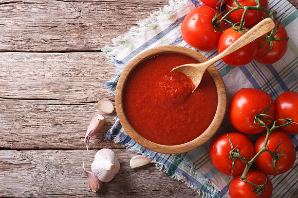

Sweet and Sour Pork
Sweet and Sour Pork is one of the classics of Chinese cuisine. No one can reject its sweet and sour mix flavor and bright appearance. Some people don’t eat pork, so some restaurants change it to Sweet and Sour Chicken, which shows how adorable its taste is.
The dish is particularly popular in the Shanghai area.
Ingrediants
Pork ½ lb pork(200 g),chopped into bite |

Oil2 ½ cups oil(500 mL) |

ketchup2 tablespoons ketchup |
Caster Suger¼ cup white caster sugar(50 g) |